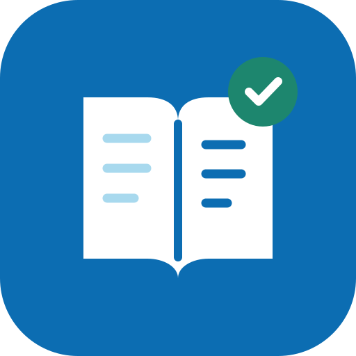

今日任务
0%正在读取学习记录…
新学词汇—按每日学习量安排
间隔复习—按学完日期自动安排
短句跟读—每天四句，练习表达
情景模拟—每周二、四、六

大洋医疗
正在准备今天的计划
正在读取学习记录…
正在准备离线资源
每一次认真练习，都在为下一次客户沟通做准备。
先听、回忆，再开口说一遍。词汇请如实选择记忆程度，其他任务练完后再打勾。
连续三个自然日选择“认识”才计为已掌握；掌握后仍会按来源安排每周复习。前台学习时计时，闲置90秒或切到后台会暂停。
随时练好下一次沟通
选择记忆程度后先核对释义，再点“下一个”；困难词会在后续组末尾再出现。
这是今日计划中的词汇。
暂未记牢的词仍会保留复习安排。回到今日任务，还可以继续跟读和情景练习。
点击英文单词查释义与音标，长按500毫秒直接收藏。可逐句朗读和跟读。
试试其他模块，或先把句子标记为待复习、收藏。
把看懂的句子说出来
评分比较识别文字与原句，不是发音音素评分。长句可分段练习；识别错听也可能影响结果。
匹配 · 待练词 · 漏读 · 多读，均有文字标注
提前练好客户会问的问题
这是今日安排的情景。完成全部对话轮次后，会记入今日任务。
把产品介绍变成一次自然的客户交流。
这是关键词练习，不判断商务承诺或产品参数是否正确。
先组织思路，再说出你的回答。
从看懂，到自然说出来
0 个生词
先看英文回忆意思，再展开释义与原句。单词保存在本机，也会包含在导出备份中。
你的学习记录，留在本机
课程、进度、收藏与弱项保存在当前浏览器。换设备或清理网站数据前，请先导出备份。语音识别由浏览器或系统服务处理。
统计本机已装课程中的词汇。预计时间以之后每天按计划完成并连续选择“认识”为条件，会随实际学习更新。
备份包含所有课程、练习进度、收藏、弱项、生词本与设置。没有账号，也不会自动同步。
课程最大5 MiB，完整备份最大50 MiB。先检查格式并预览，再确认写入。
跟读中错读或漏读的目标词会自动记在这里。
Dayang English Coach · 2026.11.11
使用说明与已知限制